🔨 Best Handiwork Pals in Palworld (1.0 Rankings)
Looking for the best Pals to craft items and build structures? Palworld 1.0 reworked the entire work suitability system — level caps went up and many Pals got new values, so most pre-1.0 tier lists are outdated. This ranking is generated from extracted 1.0 game data and covers all 109 Pals with handiwork suitability.
Quick picks
- Best overall: Solenne — Handiwork Lv8 (breed-only)
- Best wild-catchable: Lyleen Noct — Handiwork Lv5
- Best early game: Hangyu Cryst (#36) — Handiwork Lv3, low Paldeck number so you can catch it early
Full ranking — all 109 handiwork Pals
| # | Pal | Handiwork | Element | Other work | How to get |
|---|---|---|---|---|---|
| 1 | Lv8 | Dark/Neutral | Gathering 4, Transporting 2 | 🥚 Breed only | |
| 2 | Lv6 | Ground | Mining 6, Transporting 4 | 🥚 Breed only | |
| 3 | Lv6 | Ground | Mining 3, Transporting 2 | 🥚 Breed only | |
| 4 | Splatterina #153 | Lv6 | Dark | Medicine Production 5, Lumbering 3, Transporting 2 | 🥚 Breed only |
| 5 | Lv6 | Neutral | Gathering 5 | 🥚 Breed only | |
| 6 | Flaracle #174 | Lv6 | Fire | Kindling 7, Transporting 2 | 🥚 Breed only |
| 7 | Venusa #178 | Lv6 | Dark | Gathering 6, Medicine Production 5, Transporting 2 | 🥚 Breed only |
| 8 | Wistella #181 | Lv6 | Dark | Medicine Production 6, Transporting 1 | 🥚 Breed only |
| 9 | Renjishi #183 | Lv6 | Fire | Kindling 8, Gathering 5, Transporting 5 | 🥚 Breed only |
| 10 | Lv6 | Grass | Medicine Production 8, Planting 6, Gathering 4, Transporting | 🥚 Breed only | |
| 11 | Lv6 | Grass/Dark | Planting 8, Medicine Production 6, Gathering 5, Transporting | 🥚 Breed only | |
| 12 | Bellanoir Libero #195 | Lv6 | Dark | Medicine Production 7, Transporting 4 | 🥚 Breed only |
| 13 | 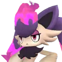 Majex #115 | Lv5 | Dark/Fire | Kindling 4, Medicine Production 3, Transporting 2 | 🥚 Breed only |
| 14 | 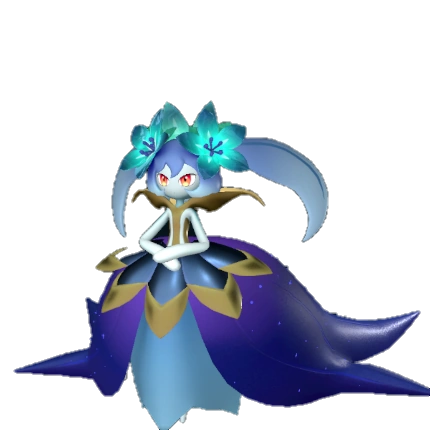 Lyleen Noct #119 | Lv5 | Dark | Medicine Production 7, Gathering 6 | ✅ Wild |
| 15 | Icelyn #119 | Lv5 | Ice | Cooling 5, Medicine Production 4, Transporting 2 | 🥚 Breed only |
| 16 | 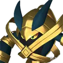 Gildra #120 | Lv5 | Dark/Ground | Medicine Production 4, Transporting 2 | 🥚 Breed only |
| 17 | Lv5 | Grass | Gathering 5, Planting 4, Lumbering 3, Transporting 3 | ✅ Wild | |
| 18 | Dupin #176 | Lv5 | Fire | Kindling 7, Medicine Production 4, Transporting 2 | 🥚 Breed only |
| 19 | Lv5 | Grass | Planting 7, Gathering 6, Medicine Production 5 | ✅ Wild | |
| 20 | Bellanoir #195 | Lv5 | Dark | Medicine Production 5, Transporting 4 | 🥚 Breed only |
| 21 | 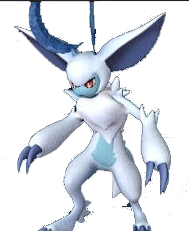 Loupmoon Cryst #56 | Lv4 | Ice | Cooling 4 | 🥚 Breed only |
| 22 | Lv4 | Grass | Planting 4, Gathering 4, Medicine Production 4, Lumbering 3 | ✅ Wild | |
| 23 | Wixen Noct #78 | Lv4 | Fire/Dark | Kindling 4, Transporting 2 | 🥚 Breed only |
| 24 | Lv4 | Neutral | Gathering 2, Transporting 2 | ✅ Wild | |
| 25 | Lv4 | Grass | Planting 6, Gathering 4, Transporting 2 | 🥚 Breed only | |
| 26 | 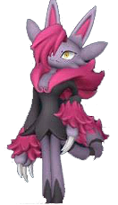 Nyafia #143 | Lv4 | Dark | Gathering 4, Transporting 3, Lumbering 2 | 🥚 Breed only |
| 27 | 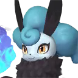 Nitemary #148 | Lv4 | Dark | Transporting 2 | 🥚 Breed only |
| 28 | Lv4 | Grass | Planting 3, Transporting 2 | 🥚 Breed only | |
| 29 | Lv4 | Neutral | Gathering 3, Lumbering 3, Transporting 3, Medicine Productio | ✅ Wild | |
| 30 | Lv4 | Grass | Planting 6, Medicine Production 6, Gathering 4 | 🥚 Breed only | |
| 31 | 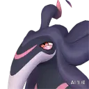 Loomen #180 | Lv4 | Dark/Fire | Kindling 4, Medicine Production 4 | 🥚 Breed only |
| 32 | 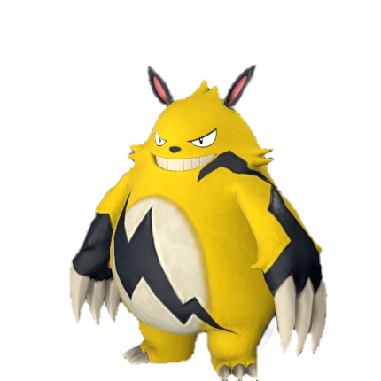 Grizzbolt #185 | Lv4 | Electric | Electricity Generation 5, Transporting 5, Lumbering 3 | ✅ Wild |
| 33 | Hangyu Cryst #36 | Lv3 | Ice | Transporting 3, Gathering 2, Cooling 2 | ✅ Wild |
| 34 | Mossanda Lux #38 | Lv3 | Electric | Electricity Generation 4, Lumbering 4, Transporting 4 | ✅ Wild |
| 35 | Lv3 | Grass/Ground | Gathering 3, Lumbering 2, Medicine Production 2, Transportin | ✅ Wild | |
| 36 | Lv3 | Grass | Planting 3, Gathering 3, Medicine Production 3, Transporting | ✅ Wild | |
| 37 | Lv3 | Dark | Medicine Production 3, Mining 2, Transporting 2 | ✅ Wild | |
| 38 | 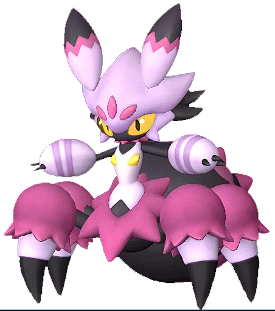 Tarantriss #71 | Lv3 | Dark | Gathering 3, Medicine Production 2, Transporting 2 | ✅ Wild |
| 39 | Lv3 | Grass | Gathering 3, Planting 2, Lumbering 2, Transporting 2, Medici | ✅ Wild | |
| 40 | 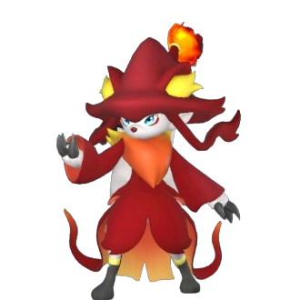 Wixen #78 | Lv3 | Fire | Kindling 3, Transporting 2 | ✅ Wild |
| 41 | 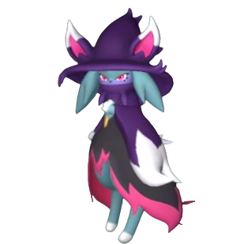 Katress #79 | Lv3 | Dark | Medicine Production 3, Transporting 2 | ✅ Wild |
| 42 | Katress Ignis #79 | Lv3 | Dark/Fire | Kindling 3, Medicine Production 3, Transporting 2 | 🥚 Breed only |
| 43 | Lv3 | Grass | Planting 4, Medicine Production 4, Gathering 3, Transporting | ✅ Wild | |
| 44 | Lv3 | Grass/Fire | Kindling 4, Medicine Production 4, Gathering 3, Transporting | 🥚 Breed only | |
| 45 | Lv3 | Grass | Planting 3, Gathering 3, Transporting 2 | 🥚 Breed only | |
| 46 | Lv3 | Grass | Transporting 6, Lumbering 5, Planting 3 | ✅ Wild | |
| 47 | Lv3 | Ground/Grass | Transporting 5, Lumbering 4, Planting 3 | ✅ Wild | |
| 48 | Lv3 | Grass | Planting 3, Medicine Production 3, Gathering 2 | ✅ Wild | |
| 49 | 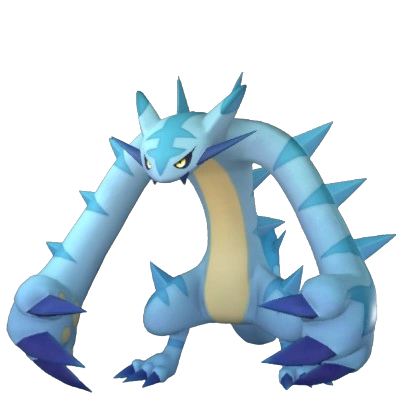 Cryolinx #132 | Lv3 | Ice | Lumbering 4, Cooling 4, Transporting 4 | ✅ Wild |
| 50 | 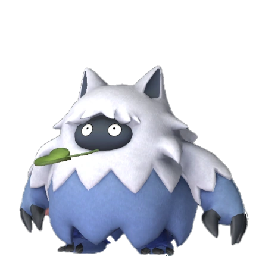 Wumpo #134 | Lv3 | Ice | Transporting 6, Lumbering 5, Cooling 5 | ✅ Wild |
| 51 | Lv3 | Dark/Fire | Kindling 3, Mining 3, Gathering 2, Farming 2 | ✅ Wild | |
| 52 | Lv3 | Grass/Dark | Planting 3, Gathering 3, Lumbering 2 | ✅ Wild | |
| 53 | Lv3 | Dragon/Dark | Mining 7 | ✅ Wild | |
| 54 | Lv3 | Ground | Gathering 4, Mining 2, Transporting 1 | 🥚 Breed only | |
| 55 | Bakemi #168 | Lv3 | Dark | Medicine Production 4, Transporting 2 | 🥚 Breed only |
| 56 | 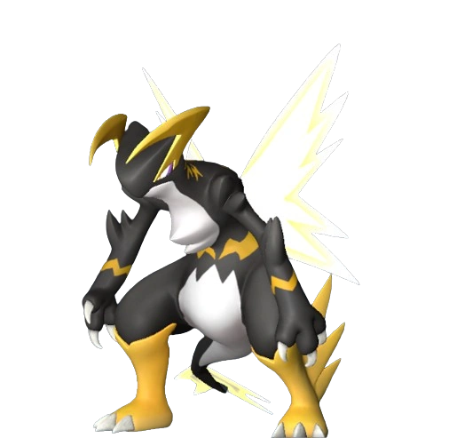 Orserk #187 | Lv3 | Dragon/Electric | Electricity Generation 8, Transporting 4 | ✅ Wild |
| 57 | Croajiro Noct #9 | Lv2 | Water/Dark | Watering 1, Gathering 1, Transporting 1 | 🥚 Breed only |
| 58 | Lv2 | Water/Ice | Mining 3, Transporting 3, Watering 2, Cooling 2 | ✅ Wild | |
| 59 | Lv2 | Water/Electric | Electricity Generation 3, Mining 3, Transporting 3, Watering | 🥚 Breed only | |
| 60 | Gobfin Ignis #34 | Lv2 | Fire | Kindling 2, Transporting 1 | ✅ Wild |
| 61 | Lv2 | Grass | Planting 2, Gathering 2, Transporting 1 | 🥚 Breed only | |
| 62 | Lv2 | Dark | Transporting 2, Mining 1 | ✅ Wild | |
| 63 | 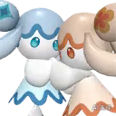 Amione #47 | Lv2 | Water | Watering 1, Transporting 1 | 🥚 Breed only |
| 64 | Gloopie #48 | Lv2 | Water/Dark | Watering 2, Transporting 2 | 🥚 Breed only |
| 65 | Lv2 | Water/Neutral | Watering 2, Transporting 2 | 🥚 Breed only | |
| 66 | Wispaw #50 | Lv2 | Dark | Lumbering 1, Medicine Production 1, Transporting 1 | 🥚 Breed only |
| 67 | 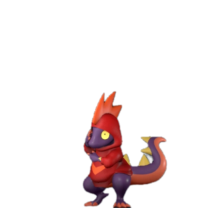 Leezpunk Ignis #53 | Lv2 | Fire | Kindling 2, Gathering 1, Transporting 1 | ✅ Wild |
| 68 | Gobfin #55 | Lv2 | Water | Watering 2, Transporting 1 | ✅ Wild |
| 69 | 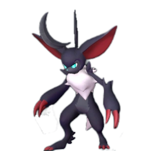 Loupmoon #56 | Lv2 | Dark | — | ✅ Wild |
| 70 | Lv2 | Grass | Planting 2, Gathering 2, Medicine Production 2, Transporting | ✅ Wild | |
| 71 | Lv2 | Grass | Gathering 3, Farming 3, Planting 2, Lumbering 2, Medicine Pr | ✅ Wild | |
| 72 | Lv2 | Neutral | Lumbering 3, Transporting 3 | ✅ Wild | |
| 73 | Lv2 | Grass | Planting 2, Gathering 2, Medicine Production 1, Transporting | ✅ Wild | |
| 74 | 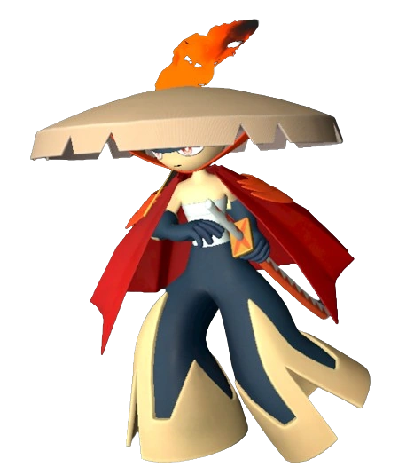 Bushi #85 | Lv2 | Fire | Lumbering 3, Kindling 2, Transporting 2, Gathering 1 | ✅ Wild |
| 75 | Bushi Noct #85 | Lv2 | Fire/Dark | Lumbering 5, Kindling 2, Transporting 2, Gathering 1 | 🥚 Breed only |
| 76 | Lv2 | Fire/Dark | Kindling 3, Mining 3, Transporting 2 | ✅ Wild | |
| 77 | Dazzi #92 | Lv2 | Electric | Electricity Generation 3, Transporting 2 | ✅ Wild |
| 78 | Lv2 | Grass | Lumbering 4, Transporting 4, Planting 3 | ✅ Wild | |
| 79 | Lv2 | Ground/Grass | Mining 5, Transporting 5 | 🥚 Breed only | |
| 80 | Lv2 | Grass | Planting 3, Gathering 3, Farming 3, Lumbering 2 | ✅ Wild | |
| 81 | Lv2 | Dragon | Transporting 5, Mining 4, Gathering 3 | ✅ Wild | |
| 82 | Lv2 | Dragon/Grass | Planting 5, Gathering 4, Transporting 4, Mining 3 | 🥚 Breed only | |
| 83 | Lv2 | Ground | Lumbering 6, Mining 5, Transporting 4 | 🥚 Breed only | |
| 84 | Lv2 | Ice | Mining 3, Cooling 3, Transporting 2 | 🥚 Breed only | |
| 85 | Lv2 | Ground | Mining 3, Transporting 3 | ✅ Wild | |
| 86 | Lv1 | Neutral | Transporting 1, Farming 1 | ✅ Wild | |
| 87 | Lv1 | Neutral | Gathering 1, Mining 1, Transporting 1 | ✅ Wild | |
| 88 | Lv1 | Grass | Planting 1, Gathering 1, Lumbering 1, Medicine Production 1 | ✅ Wild | |
| 89 | 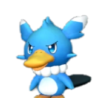 Fuack #5 | Lv1 | Water | Watering 1, Transporting 1 | ✅ Wild |
| 90 | 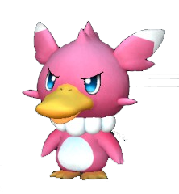 Fuack Ignis #5 | Lv1 | Water/Fire | Kindling 2, Watering 2, Transporting 1 | 🥚 Breed only |
| 91 | Croajiro #9 | Lv1 | Water | Watering 1, Gathering 1, Transporting 1 | ✅ Wild |
| 92 | Lv1 | Dark | Mining 1, Transporting 1, Farming 1 | ✅ Wild | |
| 93 | Pengullet #17 | Lv1 | Water/Ice | Watering 1, Cooling 1, Transporting 1 | ✅ Wild |
| 94 | Pengullet Lux #17 | Lv1 | Water/Electric | Electricity Generation 2, Watering 1, Transporting 1 | 🥚 Breed only |
| 95 | 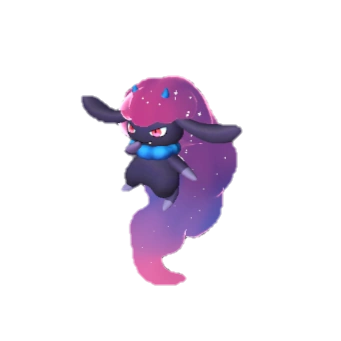 Daedream #22 | Lv1 | Dark | Gathering 1, Transporting 1 | ✅ Wild |
| 96 | Lv1 | Grass | Planting 1, Gathering 1, Lumbering 1, Transporting 1 | ✅ Wild | |
| 97 | Tanzee Ignis #23 | Lv1 | Fire | Kindling 1, Lumbering 1, Transporting 1 | 🥚 Breed only |
| 98 | 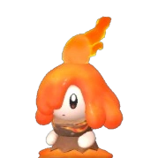 Flambelle #25 | Lv1 | Fire | Kindling 1, Transporting 1, Farming 1 | ✅ Wild |
| 99 | Lv1 | Ground | Mining 1, Transporting 1 | ✅ Wild | |
| 100 | 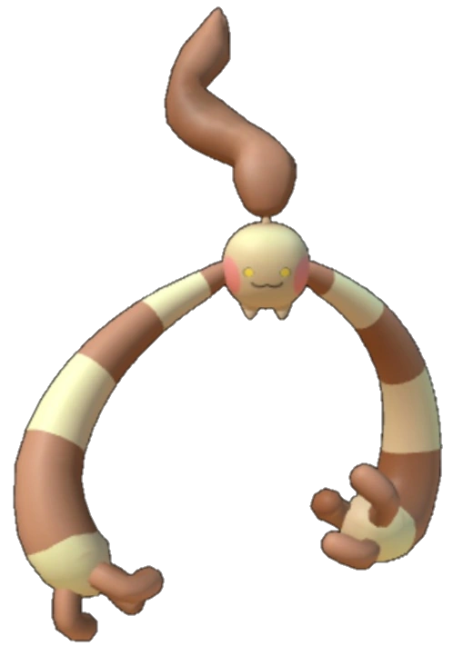 Hangyu #38 | Lv1 | Ground | Transporting 2, Gathering 1 | ✅ Wild |
| 101 | 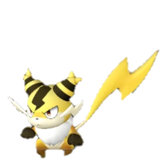 Sparkit #42 | Lv1 | Electric | Electricity Generation 1, Transporting 1, Farming 1 | ✅ Wild |
| 102 | Lv1 | Neutral | Gathering 1, Transporting 1 | 🥚 Breed only | |
| 103 | Jelliette #45 | Lv1 | Water | Watering 2, Transporting 1 | 🥚 Breed only |
| 104 | Jellroy #46 | Lv1 | Water/Dark | Watering 2, Medicine Production 1, Transporting 1 | 🥚 Breed only |
| 105 | 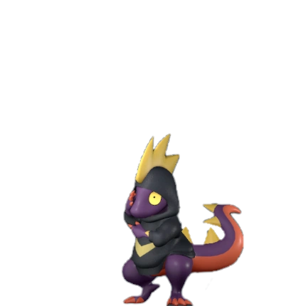 Leezpunk #73 | Lv1 | Dark | Gathering 1, Transporting 1 | ✅ Wild |
| 106 | Dazzi Noct #92 | Lv1 | Dark/Electric | Transporting 2, Electricity Generation 1, Medicine Productio | 🥚 Breed only |
| 107 | Lv1 | Dark/Neutral | Medicine Production 6, Transporting 1 | ✅ Wild | |
| 108 | Lv1 | Grass/Dark | Planting 3, Medicine Production 3, Gathering 2, Transporting | ✅ Wild | |
| 109 | Hoodle #166 | Lv1 | Dark | Transporting 1 | 🥚 Breed only |
🥚 Breed-only Pal? Use the PalTool reverse breeding calculator to find the shortest breeding path from Pals you can catch in the wild.
Work rankings: ⛏️ Mining · 🔥 Kindling · 🔨 Handiwork · 🪓 Lumbering · 📦 Transporting · 🌱 Planting · 💧 Watering · 🧺 Gathering · ⚡ Electricity Generation · 💊 Medicine Production · ❄️ Cooling · 🐄 Farming
Pals by element: 🔥 Fire · 💧 Water · 🌿 Grass · ⚡ Electric · ❄️ Ice · 🪨 Ground · 🌑 Dark · 🐉 Dragon · ⚪ Neutral
Data sourced from Palworld 1.0 game files. Last updated: July 2026.